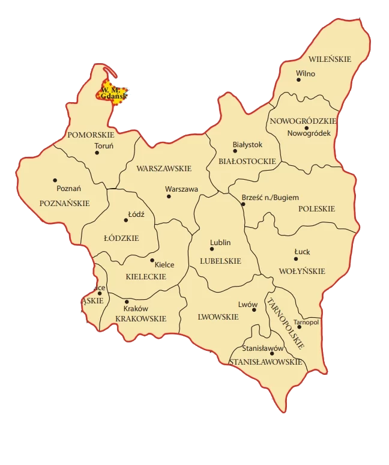

During World War II, Krakow suffered significant architectural losses.
German bombings and fighting in the vicinity of the city caused
damage to many historic districts and buildings.
The greatest losses affected mainly the Old Town, which was left behind severely damaged by fighting and bombing. Many tenement houses, churches and historic buildings have been destroyed or severely damaged. Among them were such important buildings as the church of St. Andrew, the Church of St. Floriana, St. Mary's Church and many tenement houses on the Main Square.
The great synagogue on Miodowa Street, which is one of the most important monuments Jewish culture in Krakow was also completely destroyed as a result of the war.
Many cultural and scientific institutions in Krakow also suffered in during the war. The Jagiellonian Library, one of the oldest and most important libraries in Poland, lost large collections as a result of fires and as a result of warfare. The Jagiellonian University also suffered significant damage, and many of its buildings remained damaged.
The greatest losses affected mainly the Old Town, which was left behind severely damaged by fighting and bombing. Many tenement houses, churches and historic buildings have been destroyed or severely damaged. Among them were such important buildings as the church of St. Andrew, the Church of St. Floriana, St. Mary's Church and many tenement houses on the Main Square.
The great synagogue on Miodowa Street, which is one of the most important monuments Jewish culture in Krakow was also completely destroyed as a result of the war.
Many cultural and scientific institutions in Krakow also suffered in during the war. The Jagiellonian Library, one of the oldest and most important libraries in Poland, lost large collections as a result of fires and as a result of warfare. The Jagiellonian University also suffered significant damage, and many of its buildings remained damaged.
As a result of hostilities, bombings and street fights, many historic buildings and monuments in
Lublin were destroyed or seriously damaged. The Old Town, which was one of the oldest
and the most beautiful areas of the city, suffered in a special way. Many tenement houses, churches, synagogues
and other historic buildings were destroyed or severely damaged.
An example of losses in Lublin is the Lublin Castle, which was seriously damaged as a result of bombing and fights. Many other important buildings, such as the Lublin Cathedral, St. Michael the Archangel, st. John the Baptist, as well as the synagogues suffered losses.
In addition, there was also a German concentration camp near Lublin Majdanek, which was established in 1941. This camp was a place of martyrdom and death for thousands of prisoners, mostly Jews, and a place where criminal experiments were carried out medical. After the war, the camp became a memorial site and a museum commemorating the victims of the Holocaust.
After the end of the war, Lublin undertook efforts to rebuild and reconstruct the destroyed buildings and monuments. Some of them were recreated according to the original plans, while others have been replaced by a new architecture. Currently, Lublin still has many historical buildings, which remind of its rich past, while combining with modernity and development as a dynamic city.
An example of losses in Lublin is the Lublin Castle, which was seriously damaged as a result of bombing and fights. Many other important buildings, such as the Lublin Cathedral, St. Michael the Archangel, st. John the Baptist, as well as the synagogues suffered losses.
In addition, there was also a German concentration camp near Lublin Majdanek, which was established in 1941. This camp was a place of martyrdom and death for thousands of prisoners, mostly Jews, and a place where criminal experiments were carried out medical. After the war, the camp became a memorial site and a museum commemorating the victims of the Holocaust.
After the end of the war, Lublin undertook efforts to rebuild and reconstruct the destroyed buildings and monuments. Some of them were recreated according to the original plans, while others have been replaced by a new architecture. Currently, Lublin still has many historical buildings, which remind of its rich past, while combining with modernity and development as a dynamic city.
During World War II, Łódź also suffered significant architectural losses.
The city was a strategic target for the Germans because of its industrial importance
and a large Jewish population, which contributed to the intensification of hostilities and destruction.
As a result of bombing, mainly in the period from 1944 to 1945, many districts of Łódź were destroyed. Many tenement houses, factories and other buildings were destroyed or has been seriously damaged. Many historic architectural buildings, such as palaces, tenement houses and churches also suffered.
After the end of the war, Łódź, like other cities in Poland, began the reconstruction process. Some of the destroyed buildings have been recreated, but many have also been replaced new architecture. Currently, in Lodz you can see both rebuilt monuments and modern ones buildings, creating a unique combination of past and present.
As a result of bombing, mainly in the period from 1944 to 1945, many districts of Łódź were destroyed. Many tenement houses, factories and other buildings were destroyed or has been seriously damaged. Many historic architectural buildings, such as palaces, tenement houses and churches also suffered.
After the end of the war, Łódź, like other cities in Poland, began the reconstruction process. Some of the destroyed buildings have been recreated, but many have also been replaced new architecture. Currently, in Lodz you can see both rebuilt monuments and modern ones buildings, creating a unique combination of past and present.
Warsaw suffered huge architectural losses during World War II. German bombing
and fierce fighting resulted in the almost complete destruction of the city.
The Germans carried out massive bombings of Warsaw at the beginning of the war in September 1939, destroying many buildings and infrastructure. However, the greatest destruction took place during the uprising Warsaw in 1944, when the Polish Home Army fought against the German occupier. German troops pacified the city in a brutal way, blowing up buildings, burning districts and destroying important monuments.
The most dramatic example of destruction is the complete destruction of the Old Town was one of the most beautiful and important historical places in Warsaw. left completely destroyed by the Germans in 1944 and later rebuilt with a lot of work and commitment.
Other significant damage also affected important buildings, such as the Saxon Palace, Zachęta - National Gallery of Art, University of Warsaw, Grand Theatre, St. of the Cross and many other churches, palaces and public buildings.
After the war, a huge effort was made to rebuild Warsaw. Some historic buildings such as Królikarnia or palaces in the Royal Łazienki Park, have been reconstructed in accordance with original plans, while other objects have been replaced with modern architecture.
Currently, Warsaw, despite the losses, impresses with its architecture, both rebuilt monuments, as well as new buildings. The old town, a UNESCO World Heritage Site, has stood became a symbol of determination and rebirth of the Polish nation. Many architects and engineers from all over the world took part in the process of rebuilding the city to restore its former glory and provide residents and visitors with a beautiful space to live and explore.
The Germans carried out massive bombings of Warsaw at the beginning of the war in September 1939, destroying many buildings and infrastructure. However, the greatest destruction took place during the uprising Warsaw in 1944, when the Polish Home Army fought against the German occupier. German troops pacified the city in a brutal way, blowing up buildings, burning districts and destroying important monuments.
The most dramatic example of destruction is the complete destruction of the Old Town was one of the most beautiful and important historical places in Warsaw. left completely destroyed by the Germans in 1944 and later rebuilt with a lot of work and commitment.
Other significant damage also affected important buildings, such as the Saxon Palace, Zachęta - National Gallery of Art, University of Warsaw, Grand Theatre, St. of the Cross and many other churches, palaces and public buildings.
After the war, a huge effort was made to rebuild Warsaw. Some historic buildings such as Królikarnia or palaces in the Royal Łazienki Park, have been reconstructed in accordance with original plans, while other objects have been replaced with modern architecture.
Currently, Warsaw, despite the losses, impresses with its architecture, both rebuilt monuments, as well as new buildings. The old town, a UNESCO World Heritage Site, has stood became a symbol of determination and rebirth of the Polish nation. Many architects and engineers from all over the world took part in the process of rebuilding the city to restore its former glory and provide residents and visitors with a beautiful space to live and explore.
During World War II, Poznań also suffered architectural losses,
however, to a lesser extent compared to other Polish cities, such as Warsaw or Wrocław.
During the September Campaign in 1939, German air raids and bombing resulted destruction of many buildings, including the historic city center. But more damage took place later in the war.
During the Greater Poland Uprising in 1945, which was an attempt to liberate the city from German occupation, there was fighting and destruction. German troops defended the city, a the bombings accompanying the fighting caused damage in some parts of Poznań.
During the September Campaign in 1939, German air raids and bombing resulted destruction of many buildings, including the historic city center. But more damage took place later in the war.
During the Greater Poland Uprising in 1945, which was an attempt to liberate the city from German occupation, there was fighting and destruction. German troops defended the city, a the bombings accompanying the fighting caused damage in some parts of Poznań.
During the September Campaign in 1939, Toruń was heavily bombed
by the German Air Force. Many historic buildings were damaged as a result of these attacks
was destroyed, including fragments of medieval defensive walls and the Monastery Gate.
Many historic buildings in Toruń, such as churches, tenement houses and palaces, has been seriously damaged or destroyed. Among the most affected objects were Cathedral of St. John, Church of St. James, Church of St. spirit and Old Town hall. Large areas of the Old Town were completely destroyed.
Many historic buildings in Toruń, such as churches, tenement houses and palaces, has been seriously damaged or destroyed. Among the most affected objects were Cathedral of St. John, Church of St. James, Church of St. spirit and Old Town hall. Large areas of the Old Town were completely destroyed.